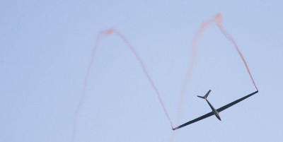

Der Traum vom Fliegen
Der Wunsch vieler Menschen, in die Luft zu gehen und selbst ein Flugzeug zu steuern ist heute einfacher denn je realisierbar. Die Fluggeräte sind sicher, zuverlässig und wartungsarm.
Sei es über den Segelflug zum Motorflug oder für Adrenalin-Junkies auch zum Kunstflug.


Segelflug
Im Doppelsitzer mit der Seilwinde auf ca. 450m oder im Flugzeugschlepp.
Das Mindestalter für den Beginn der Ausbildung beträgt 14 Jahre. Die ersten Starts finden im Doppelsitzer statt (Flugschüler vorne, Lehrer hinten).
- Grundlagen: Geradeaus fliegen, Kurven, Kreiswechsel, Starten & Landen.
- Erster Alleinflug: Wenn zwei Lehrer zustimmen, fliegt der Schüler zum ersten Mal alleine.
Nach der A-PrüfungA-Prüfung
Erster Alleinflug & praktische Grundlagenprüfung. Der Schüler weist nach, dass er sicher starten, geradeaus fliegen, Kurven drehen und landen kann. folgen B-PrüfungB-Prüfung
Fortgeschrittene Prüfung: Thermikfliegen, Kreisfliegen und erweiterte Flugtechnik im Alleinflug. Nachweis selbstständigen Segelfliegens. und C-PrüfungC-Prüfung
Abschlussprüfung mit offiziellem Prüfer (praktisch & theoretisch). Erfolgreicher Abschluss führt zum SPL – dem Segelflugzeugführerschein.. Parallel läuft die Theorie.
Mindestalter für die Lizenz-Erteilung: 16 Jahre.
Kunstflug
Achterbahn Feeling pur
Die Ausbildung ist hier eine rein praktische Ausbildung. Zu Beginn mit Fluglehrer, nach Erreichen entsprechender Fähigkeiten im Alleinflug.
Für die Prüfung werden 5 Kunstflugfiguren geübt:
- Looping & Aufschwung
- Abschwung
- Rolle & Turn (links / rechts)


Motorsegler / Motorflug
Bei uns kann man die Lizenz zum Motorsegler-Piloten nur über eine vorangegangene Segelflugausbildung bekommen.
Wenn die Segelfluglizenz bestanden ist, kann man die Ausbildung für die Klassenberechtigung TMG (Touring-Motor-Glider) beginnen.
Mindestalter für die Lizenz: 17 Jahre.